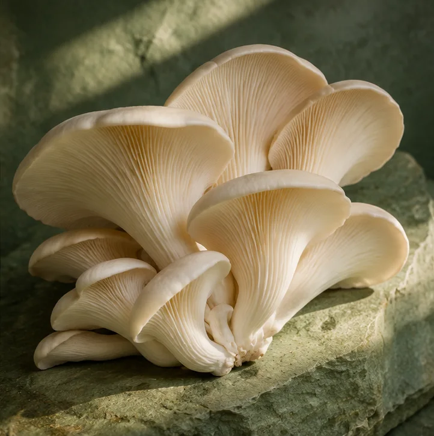
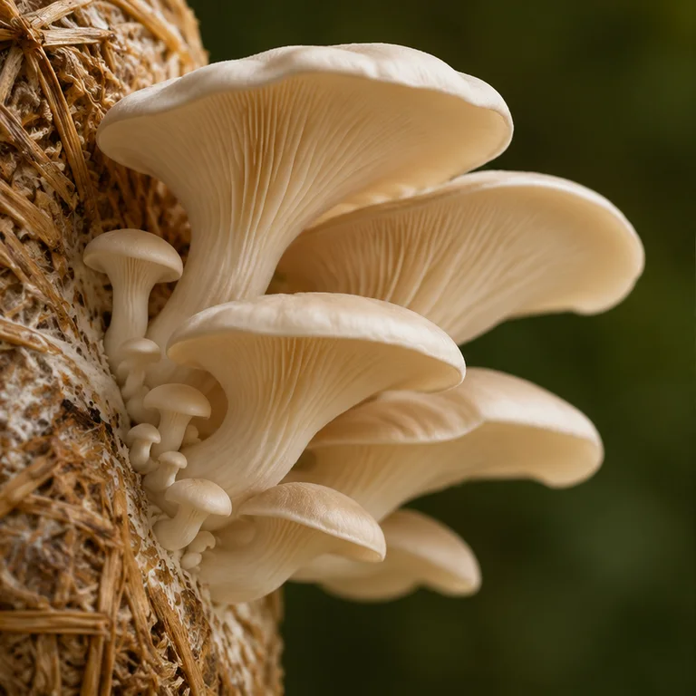

Today’s harvest
Oyster mushrooms
₹60 / 200 g pack
Delicate fans with a tender bite. Tear them into strips for a quick stir-fry or sear them in a hot pan until the edges turn golden.
Order on WhatsAppHarvested daily in Kodagu
Tender oyster mushrooms picked fresh every morning, with home delivery in Kushalnagar.
See today’s harvest
Today’s harvest
₹60 / 200 g pack
Delicate fans with a tender bite. Tear them into strips for a quick stir-fry or sear them in a hot pan until the edges turn golden.
Order on WhatsAppKushalnagar, Kodagu
In Kushalnagar, Coorg Myco Ventures grows oyster mushrooms and picks them fresh each morning for local delivery. The first signs of a harvest appear well before the familiar fan-shaped caps.

Fine white threads called mycelium spread through the growing material, drawing on its nutrients.
With moisture and fresh air, tiny buds appear. They grow into clusters of broad, fan-shaped caps.
We harvest fresh oyster mushrooms for delivery within Kushalnagar.
Per 100 g of raw oyster mushrooms.
Oyster mushrooms also contain B vitamins, including niacin and riboflavin. Nutrition data from USDA
Each recipe uses one 200 g pack and serves two. Trim the tough base and tear the caps into bite-size strips before cooking.
Ingredients 200 g oyster mushrooms, 1 tbsp oil, 1 small sliced onion, 8 curry leaves, ½ tsp crushed black pepper, salt.
Fry the curry leaves and onion in oil for 3 minutes. Add the mushrooms and cook over medium-high heat for 7–9 minutes, stirring occasionally, until tender and browned. Season with pepper and salt.
Ingredients 200 g oyster mushrooms, 1 tbsp butter, 2 minced garlic cloves, 4 slices of bread, 1 tsp lemon juice, salt.
Toast the bread. Melt the butter in a hot pan and cook the mushrooms for 7–9 minutes until golden, then stir in the garlic for 30 seconds. Add lemon and salt, then spoon over the toast.
Ingredients 200 g oyster mushrooms, 2 cups cooked rice, 1 egg, 1 tbsp oil, 1 tbsp soy sauce, 2 sliced spring onions.
Brown the mushrooms in oil for 7–9 minutes. Push them to one side and scramble the egg in the same pan until set. Add the rice and soy sauce, toss until steaming hot, and finish with spring onions.
Ingredients 200 g oyster mushrooms, 1 tbsp oil, 1 small chopped onion, 1 chopped tomato, 1 tsp curry powder, ¾ cup coconut milk, salt.
Soften the onion in oil, then add the tomato and curry powder. Cook until the tomato softens. Add the mushrooms and sauté for 5 minutes, then add the coconut milk and salt. Simmer gently for 6–8 minutes, until tender.
Ingredients 200 g oyster mushrooms, 1 tbsp oil, ½ tsp garam masala, ½ lemon, 2 chapatis, 2 tbsp plain curd, sliced cucumber, salt.
Sear the mushrooms in oil for 7–9 minutes until golden. Toss with garam masala and salt, then squeeze over the lemon. Spread curd on warm chapatis and roll up with the mushrooms and cucumber.
Order enquiries
Home delivery is available within Kushalnagar, Kodagu. Send us the number of oyster mushroom packs you’d like to confirm availability and arrange delivery.
Order on WhatsApp